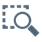

Icon
Name
Function

Add Topology File
Adds a previously stored topology to the topologies list.

Export Topology
Performs a Topology Export to disk.
PRONETA Basic’s Network Analysis gives you a quick overview about which devices are installed in your PROFINET network, and how they are connected with each other. The Network Analysis also lets you view and change various network parameters of the devices, like IP addresses, device names etc.
Different networks can be compared with each other, and the devices can be configured automatically or manually.
Offline mode allows you to examine a reference network which was previously stored to disk, in much the same manner as in Online mode. The main difference is that, as the name implies, Offline mode is strictly limited to reading operations and will never write to your devices.
The main screen is divided from left to right in:
A Topology List (1) of previously stored reference networks
A Graphical View (2), and
A Device List (3) and Device Details (4) similar to the ones used in Online Mode which provide information about devices stored in the selected topology.
Function Bar
The following functions are available in the function bar:
|
Icon |
Name |
Function |
|
|
Add Topology File |
Adds a previously stored topology to the topologies list. |
|
|
Export Topology |
Performs a Topology Export to disk. |
Topologies can be loaded from storage medium into PRONETA Basic in one of three formats:
As an XML file which has previously been stored from PRONETA Basic
As an AML file which has been created with TIA Portal
As a STEP 7 project (versions 5.4, 5.5 or 5.6)
In the “Add Topology File” dialog, select the topology file type you want to load, and klick "Browse" to search for the corresponding topology on storage medium.
Note the following when using AML files:
|
NOTE |
Currently (TIA Portal V15.1), the TIA Portal performs only a restricted AML export.
|
Topology List
In this window a list of stored network topologies is displayed. Add more topologies through the commands in the function bar.
To remove an entry, right-click in the list and apply the “Remove File” command.
Selecting an entry from the list will display this topology in the Graphical View.
Graphical View
The Graphical View is a graphical display of the PROFINET network. For details on its operation, see Graphical View in the Online mode.
A right-click on a device in the Graphical View or in the Device Table will bring up the Device Context Menu.
Tool Bar
In the top section of the Graphical View, there is a tool bar with a variety of function icons:
|
Icon |
Name |
Function |
|
|
Show Overview of Topology |
Toggles a topology overview within the Online View. (See Topology Overview) |
|
 |
Zoom Selection |
Lets you draw a rectangle inside the Graphical View. Once you release the mouse button, the view will zoom to display the rectangle area. |
|
|
Zoom Fit to Screen |
Zooms the view back in a way that all network devices fit inside the view. |
|
|
Zoom Bar |
Zoom into the network or back by dragging the handle to the right or the left, respectively, or clicking on “-“ or “+”. (You can also zoom into and out of the Graphical View by placing the mouse over the view and using the scroll wheel.) |
|
Show Physical Connection Types |
Indicates the transmission medium used in different colors. (See Device Connection Types ) |